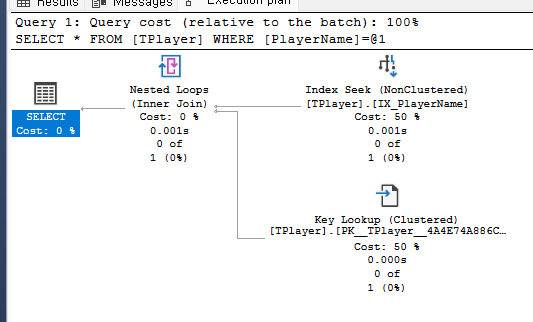
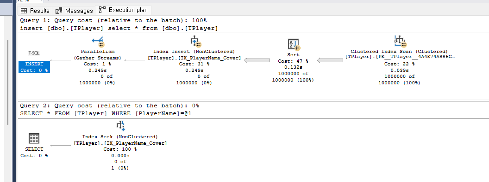

< DB / 캐시
Part 1. 실행 계획이 뭐야?
쿼리를 실행하면 DB가 알아서 처리하잖아. 근데 어떻게 처리하는지 볼 수 있어?
네비게이션 비유
너: "서울에서 부산 가줘"
네비게이션:
- 경로1: 경부고속도로 → 4시간
- 경로2: 국도 → 7시간
- 경로3: KTX → 2시간
→ "경로3 선택!"
DB도 똑같아. 여러 방법 중 최적의 경로를 선택해.
SELECT * FROM TPlayer WHERE PlayerName = 'Player500000';
DB 옵티마이저:
- 방법1: Full Table Scan → 9,487 읽기
- 방법2: Index Seek → 100 읽기
- 방법3: Index Seek + Key Lookup → 200 읽기
→ "방법2 선택!"
이 "어떤 방법으로 할지 결정한 계획" = 실행 계획
Part 2. 실행 계획 보는 법
SSMS에서 어떻게 봐?
Ctrl + M 누르고 쿼리 실행!
결과 탭 옆에 "실행 계획" 탭이 생겨.
-- 1. Ctrl + M 누르기 (실제 실행 계획 포함)
-- 2. 쿼리 실행
SELECT * FROM TPlayer WHERE PlayerName = 'Player500000';
-- 3. "실행 계획" 탭 클릭

Key Lookup이 50%나 차지하는 실행 계획
읽는 순서:
Index Seek (50%) → Key Lookup (50%) → Nested Loops → SELECT
해석:
1. Index Seek: 인덱스에서 PlayerName 찾음
2. Key Lookup: 인덱스에 없는 나머지 컬럼 가져오러 원본 테이블 감
3. Nested Loops: 두 결과 합침
| 단계 |
의미 |
비용 |
| Index Seek |
인덱스에서 조건에 맞는 데이터 찾음 |
50% |
| Key Lookup |
인덱스에 없는 컬럼 가져오러 원본 테이블 방문 |
50% |
Part 3. Key Lookup 없애기
Key Lookup이 50%나 차지해. 없앨 수 있어?
Covering Index!
인덱스에 필요한 컬럼을 다 포함시키면 원본 테이블에 안 가도 돼.
-- 기존 인덱스: PlayerName만 포함
CREATE INDEX IX_PlayerName ON TPlayer(PlayerName);
-- → SELECT * 하면 나머지 컬럼 가져오러 Key Lookup 발생
-- Covering Index: 모든 컬럼 포함
CREATE INDEX IX_PlayerName_Cover ON TPlayer(PlayerName)
INCLUDE (PlayerID, ServerID, Level, Gold, CreateDate, LastLoginDate);
-- → 인덱스만으로 모든 컬럼 제공 가능!

Covering Index 적용 후 - Key Lookup 사라짐!
| 상태 |
실행 계획 |
비용 분포 |
| Before |
Index Seek → Key Lookup → Nested Loops |
50% + 50% |
| After |
Index Seek만! |
100% (인덱스만) |
결과
Key Lookup 제거 → 원본 테이블 방문 없음 → 성능 향상!
Part 4. 실행 계획에서 자주 보는 것들
| 연산자 |
의미 |
상태 |
| Index Seek |
인덱스에서 필요한 데이터만 정확히 찾음 |
좋음 |
| Table Scan |
테이블 전체를 처음부터 끝까지 읽음 |
나쁨 |
| Index Scan |
인덱스 전체를 읽음 (Seek보다 비효율) |
주의 |
| Key Lookup |
인덱스 찾고 원본 테이블 다시 방문 |
주의 |
| Nested Loops |
두 결과를 루프로 조인 |
상황에 따라 |
| Hash Match |
해시 테이블로 조인 (대용량) |
상황에 따라 |
Table Scan이 보이면 무조건 나쁜 거야?
작은 테이블이면 괜찮아. 어차피 전체 읽어도 빠르니까.
근데 100만 건 테이블에서 Table Scan이면 문제!
Part 5. 실행 계획 활용법
| 상황 |
확인할 것 |
| 쿼리가 느릴 때 |
Table Scan, Index Scan 있는지 |
| 인덱스 추가 후 |
실제로 Index Seek 쓰는지 |
| 쿼리 튜닝 후 |
비용이 줄었는지 비교 |
실행 계획 활용 순서:
1. 느린 쿼리 발견
2. Ctrl+M으로 실행 계획 확인
3. Table Scan, Key Lookup 등 비효율 찾기
4. 인덱스 추가 또는 쿼리 수정
5. 다시 실행 계획 확인 → 개선됐는지 비교
핵심 정리: 실행 계획
- 실행 계획 - DB가 쿼리를 처리하는 "방법"을 보여주는 계획서
- 보는 법 - SSMS에서 Ctrl+M 누르고 실행
- 읽는 법 - 오른쪽에서 왼쪽으로
- 좋은 것 - Index Seek (필요한 것만 정확히 찾음)
- 나쁜 것 - Table Scan, Key Lookup (비효율적 접근)
- 해결책 - 인덱스 추가, Covering Index로 Key Lookup 제거